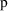
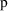
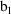
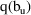
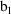
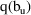
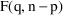
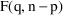

; the distinction between individual fixed effects
parameters (
; the distinction between individual fixed effects
parameters (
 ) and population fixed effects parameters will not be
important here.
) and population fixed effects parameters will not be
important here.Chapter 5 - Estimates, Confidence Intervals, and Hypothesis Tests
In this chapter, we discuss the fitting criterion that NONMEM uses, parameter estimates, and standard error estimates. We then discuss how to form confidence intervals for parameters and do hypothesis tests with NONMEM.
In principle, all fitting procedures attempt to adjust the values of the parameters of the model to give a "best fit" of the predictions to the actual observations. The set of parameters that accomplish this are called the parameter estimates, and are denoted here as
,
, and
. Methods differ in how they define "best". The
criterion that NONMEM uses is a Least Squares (LS) type
criterion. The form of this criterion varies as the error
model varies, and as population models with multiple random
effects must be considered. We briefly discuss these various
criteria next, to give the reader a feel for what NONMEM is
doing. A detailed knowledge of the statistical basis for the
choice of fitting criterion is not necessary either to use
or interpret NONMEM fits. In this chapter, a fixed effects
parameter will be denoted by a
; the distinction between individual fixed effects
parameters (
) and population fixed effects parameters will not be
important here.
For the Additive error
model (3.4), the Ordinary Least Squares criterion (OLS)
chooses the estimate
so as to make the sum of squared (estimated) errors as small
as possible. These estimates cause the prediction, here
denoted
 , to be an estimate of the mean value of
, to be an estimate of the mean value of
 , which is intuitively appealing. The prediction is obtained
by computing the value for y under the model with parameters
set to their estimated values and
, which is intuitively appealing. The prediction is obtained
by computing the value for y under the model with parameters
set to their estimated values and
 set to zero†.
set to zero†.
----------
†
 , not
, since we follow the NONMEM convention and, when discussing
individual type data as here, use
to denote the random effects of a single level that appear
in the model, those in the residual error model.
, not
, since we follow the NONMEM convention and, when discussing
individual type data as here, use
to denote the random effects of a single level that appear
in the model, those in the residual error model.
----------
The simple OLS criterion
just defined becomes inefficient and is no longer the
"best" one to use when the error model is other
than the Additive error model. It treats all estimated
errors as equally important (i.e. a reduction in the
magnitude of either of two estimated errors that are of the
same magnitude is equally valuable in that either reduction
decreases the sum of squared errors by the same amount), and
this results in parameter estimates that cause all errors to
have about the same typical magnitude, as assumed under the
Additive model. The CCV error model, though, says that the
typical magnitude of an error varies monotonically with the
magnitude of the (true) prediction of y. In principle,
Weighted Least Squares (WLS) gives a fit more commensurate
with the CCV or other non-Additive error model. WLS chooses
 as that value of
as that value of
 minimizing
minimizing
Each
 is a weight which, ideally, is set proportional to the
inverse of the variance of
. In the CCV model this variance is proportional to
(evaluated at the true value of
is a weight which, ideally, is set proportional to the
inverse of the variance of
. In the CCV model this variance is proportional to
(evaluated at the true value of
 ). Use of such weights will down-weight the importance of
estimated squared errors associated with large values of
and promote the relative contribution of those associated
with small values of
). Use of such weights will down-weight the importance of
estimated squared errors associated with large values of
and promote the relative contribution of those associated
with small values of
 .
.
In many cases, users can
supply approximate weights, and the WLS objective function
can be used as stated in (5.1). When, as with the CCV model
for example, the ideal weights depend on the true values of
parameters, these true values can be replaced by initial
estimates, and then the WLS objective function as given in
(5.1) can be minimized. Alternatively, instead of viewing
as a function of
 only through the estimated error’s dependence on
only through the estimated error’s dependence on
 , it can be viewed as a function of
, it can be viewed as a function of
 through both that dependence and also through the
ideal weights’ dependence on
through both that dependence and also through the
ideal weights’ dependence on
 . The entire function can then be minimized with respect to
. The entire function can then be minimized with respect to
 . That this creates a problem is most easily seen when the
error model contains a parameter which is not itself a
parameter of the structural model, but which, nonetheless,
must be regarded as an element of
. That this creates a problem is most easily seen when the
error model contains a parameter which is not itself a
parameter of the structural model, but which, nonetheless,
must be regarded as an element of
 . Such an error model is the Power Function model of (3.7),
and the "extra" parameter is
. Such an error model is the Power Function model of (3.7),
and the "extra" parameter is
 . The WLS objective function with the reciprocal variance of
. The WLS objective function with the reciprocal variance of
 substituted for
is†
substituted for
is†
----------
† Again, we
call attention to the symbols used for the random effects
parameter: the term
appears in the objective function, (5.2), not
, because we are discussing individual type data, not
population type data.
----------
In this case if
 were set to a very large number, while the other parameters
in
were only such as to make all
, then all
were set to a very large number, while the other parameters
in
were only such as to make all
, then all
 would be very large, and the summation would attain a very
small value. (The value of
is irrelevant to the minimization with respect to
would be very large, and the summation would attain a very
small value. (The value of
is irrelevant to the minimization with respect to
 .) Thus, all elements in
.) Thus, all elements in
 other than

would be indeterminate (as long as they were such that all
were greater than 1); a most unsatisfactory state of
affairs.
other than

would be indeterminate (as long as they were such that all
were greater than 1); a most unsatisfactory state of
affairs.
There is a way to deal
with this problem that preserves the spirit of least-squares
fitting, and NONMEM uses it. In essence, it adds to the WLS
objective function a term proportional to the sum of the
logarithms of the error variances. Thus a penalty is paid
for increasing the error variances without a concomitant
decrease in the estimated errors themselves. This modified
objective function is called the Extended Least Squares
(ELS) objective function. It is minimized with respect to
all parameters of the structural and error models
simultaneously (in the current example,
 and
, as
and
, as
 can be considered an element of
can be considered an element of
 ). Note that the objective function may be negative. This
has no particular significance.
). Note that the objective function may be negative. This
has no particular significance.
The complications arising
from a population model are due entirely to the random
interindividual effects occurring in the parameter model. To
deal with this, NONMEM uses an approximation to the true
model. The approximate model is linear in all the random
effects. For this linearized model, the vector of mean
values for the observations from the
 individual is the vector of true predictions for these
observations. These predictions are obtained from the model
by setting the parameters to their true values and by
setting all the elements of both
individual is the vector of true predictions for these
observations. These predictions are obtained from the model
by setting the parameters to their true values and by
setting all the elements of both
 and
and
 to zero. In other words, these are the true predictions for
the mean individual with fixed effects equal to those of the
to zero. In other words, these are the true predictions for
the mean individual with fixed effects equal to those of the
 individual. For this linearized model it is also possible to
write a formula for the variance-covariance matrix of the
observations from the
individual. For this linearized model it is also possible to
write a formula for the variance-covariance matrix of the
observations from the
 individual. This matrix is a function of the
individual’s fixed effects and the population
parameters
individual. This matrix is a function of the
individual’s fixed effects and the population
parameters
 ,
,
 , and
, and
 . Finally, the ELS objective function discussed above is
generalized to be a sum over individuals, rather than
observations, and where the
term of the sum involves a squared error between a vector of
observations and an associated vector of predictions,
weighted by the reciprocal of the associated
variance-covariance matrix for the
individual.
. Finally, the ELS objective function discussed above is
generalized to be a sum over individuals, rather than
observations, and where the
term of the sum involves a squared error between a vector of
observations and an associated vector of predictions,
weighted by the reciprocal of the associated
variance-covariance matrix for the
individual.
It is useful to consider
how to estimate parameters that do not appear in the model
we use to fit the data, but are, instead, functions of them
(e.g. the half-life parameter
, when the rate constant of elimination
 is the model parameter).
is the model parameter).
It is always possible, of
course, to parameterize the model in the function of
interest. For example, we have already seen (Chapters 2
& 3) that we may use the function (parameter)
 in the one-compartment model instead of
in the one-compartment model instead of
 . However, we may be interested in the values of several
alternative parameterizations (e.g., we may want to know k,
clearance, and half-life). Rather than rerun the same
problem with several alternative parameterizations, we can
use the fact that the LS estimate of a function of the
parameters is given by the same function of the LS parameter
estimates. Formally, if
is the function of interest, then
. E.g. Letting
,
, and
, then
.
. However, we may be interested in the values of several
alternative parameterizations (e.g., we may want to know k,
clearance, and half-life). Rather than rerun the same
problem with several alternative parameterizations, we can
use the fact that the LS estimate of a function of the
parameters is given by the same function of the LS parameter
estimates. Formally, if
is the function of interest, then
. E.g. Letting
,
, and
, then
.
Clearly, it is almost
impossible for the estimates to actually be the true values.
The question is: how far are the true values from the
estimates? To discuss this question, imagine replicating the
entire experiment (gathering new data, but keeping
 fixed) multiple times. Also, for simplicity, imagine that
the model has only one scalar parameter,
fixed) multiple times. Also, for simplicity, imagine that
the model has only one scalar parameter,
 , and that its true value,
, and that its true value,
 is known. If, after each replication, the estimate of
is known. If, after each replication, the estimate of
 is recorded, and a histogram of these values is plotted, one
might see something like figure 5.1A or 5.1B.
is recorded, and a histogram of these values is plotted, one
might see something like figure 5.1A or 5.1B.
Figure 5.1. Two hypothetical histograms of estimates of a single parameter upon replication of a given experiment. Left panel (A): The estimates have small variance (spread) but are biased (the mean of the estimates differs from the true value, ); Right panel: The estimates have large variance but are relatively unbiased.
The difference between
the estimate and the true value,
 , obviously differs from replication to replication. Let
this difference be called the estimation error. We
cannot know the estimation error of any particular estimate
(if we could, we could know the true value itself, by
subtraction), but we can hope to estimate the mean error
magnitude. Since errors can be positive or negative, a
measure of magnitude that is unaffected by sign is
desirable. This is traditionally the Mean Squared Error (
, obviously differs from replication to replication. Let
this difference be called the estimation error. We
cannot know the estimation error of any particular estimate
(if we could, we could know the true value itself, by
subtraction), but we can hope to estimate the mean error
magnitude. Since errors can be positive or negative, a
measure of magnitude that is unaffected by sign is
desirable. This is traditionally the Mean Squared Error (
 ). The MSE can be factored into two parts:
). The MSE can be factored into two parts:

where
 is the bias of the estimates (mean (signed) difference
between the estimates and the true value) and
is the bias of the estimates (mean (signed) difference
between the estimates and the true value) and
 is the standard error of the estimates (
is the variance of the estimates). As illustrated in figure
5.1, the
can be about the same for two types of estimates while both
their bias and
is the standard error of the estimates (
is the variance of the estimates). As illustrated in figure
5.1, the
can be about the same for two types of estimates while both
their bias and
 differ. It is very hard to estimate the bias of an estimator
unless the true parameter value is, in fact, known. This is
not true of the
: the standard deviation of the distribution of estimates of
a parameter on replication is the
differ. It is very hard to estimate the bias of an estimator
unless the true parameter value is, in fact, known. This is
not true of the
: the standard deviation of the distribution of estimates of
a parameter on replication is the
 ; no knowledge of the true value of the parameter is
required. In many situations, LS estimators of fixed effects
parameters are unbiased, although in nonlinear problems,
such as most pharmacokinetic ones, this cannot be
assured.
; no knowledge of the true value of the parameter is
required. In many situations, LS estimators of fixed effects
parameters are unbiased, although in nonlinear problems,
such as most pharmacokinetic ones, this cannot be
assured.
Figure 5.1 illustrates
the distribution of parameter estimates that might result if
an experiment were replicated. The bias and spread depend on
the estimation method, the design of the experiment (
 , which implicitly includes
) and on the true parameter values, including the variances
(and covariances) of the random effects influencing
, which implicitly includes
) and on the true parameter values, including the variances
(and covariances) of the random effects influencing
 . If, for example, more observations were obtained in each
experiment (more individuals in a population study), the
spread of the estimates (one from each experiment) would
decrease until, in the limit, if an infinite number of
observations were obtained in each experiment, every
estimate would be the same (equal to the true value plus the
bias of the estimator). Thus, the distribution of the
estimate tells us nothing about biology or measurement
error, but only about the
of the estimate itself.
. If, for example, more observations were obtained in each
experiment (more individuals in a population study), the
spread of the estimates (one from each experiment) would
decrease until, in the limit, if an infinite number of
observations were obtained in each experiment, every
estimate would be the same (equal to the true value plus the
bias of the estimator). Thus, the distribution of the
estimate tells us nothing about biology or measurement
error, but only about the
of the estimate itself.
In contrast,
 and
and
 tell us about unexplained (or random) interindividual
variability (biology) or error magnitude (biology plus
measurement error), not about how precisely we know these
things. No matter how many observations we make,
interindividual variability will remain the same size (but
the variability of our estimate of its size will decrease),
as will the measurement error variability of a particular
instrument.
tell us about unexplained (or random) interindividual
variability (biology) or error magnitude (biology plus
measurement error), not about how precisely we know these
things. No matter how many observations we make,
interindividual variability will remain the same size (but
the variability of our estimate of its size will decrease),
as will the measurement error variability of a particular
instrument.
It is very important not
to confuse variability (e.g., between individuals) in a
model parameter with variability in the estimate of that
parameter, despite the fact that the terms we use to
describe both variabilities are similar. Thus an element of
 , say
, say
 has a
,
has a
,
 , while the estimate of
,
, also has a
given by the square of the standard error for
. Indeed, the use of the term "standard error"
rather than "standard deviation" to name a measure
of the spread in the distribution of the parameter
rather than in the parameter helps call attention to the
distinction between these two types of things.
, while the estimate of
,
, also has a
given by the square of the standard error for
. Indeed, the use of the term "standard error"
rather than "standard deviation" to name a measure
of the spread in the distribution of the parameter
rather than in the parameter helps call attention to the
distinction between these two types of things.
Acknowledging that any particular estimate from any particular experiment is unlikely to equal the true parameter value implies that we should be interested in "interval" estimates of parameters as well as (instead of?) point estimates. An interval estimate of a parameter is usually a range of values for the parameter, often centered at the point estimate, such that the range contains the true parameter value with a specified probability. The probability chosen is often 95%, in which case the interval estimate is called the 95% Confidence Interval (CI).
A CI is often based only
on the parameter estimate and its
 . In the next sections we discuss three questions about such
CIs a little further. (i) How to estimate the
. In the next sections we discuss three questions about such
CIs a little further. (i) How to estimate the
 from a single set of data (we cannot replicate our
experiment many times and construct a histogram as in figure
5.1). (ii) Given an estimate of
from a single set of data (we cannot replicate our
experiment many times and construct a histogram as in figure
5.1). (ii) Given an estimate of
 , how to use that number to compute a (95% confidence)
interval with 95% chance of containing the true parameter
value. (iii) Given an estimate of
, how to use that number to compute a (95% confidence)
interval with 95% chance of containing the true parameter
value. (iii) Given an estimate of
 , how to compute a confidence interval for a function of the
parameter.
, how to compute a confidence interval for a function of the
parameter.
Remarkably, the
 of a parameter estimate can be estimated using only the data
from a single experiment. The idea is that the data give us
estimates of the variances of all random effects in our
model, from which we can estimate the variability in future
data (if we were to replicate the experiment). That is, the
SE of the estimates on replication depends only on
quantities we either know or have estimates of: the
of a parameter estimate can be estimated using only the data
from a single experiment. The idea is that the data give us
estimates of the variances of all random effects in our
model, from which we can estimate the variability in future
data (if we were to replicate the experiment). That is, the
SE of the estimates on replication depends only on
quantities we either know or have estimates of: the
 , the number of
, the number of
 observed (
observed (
 ), and the variances of all random effects.
), and the variances of all random effects.
It is a little beyond the
scope of this discussion to give the method by which NONMEM
actually estimates the
 of a parameter estimate; however, examples of how this can
be done are found in any statistical textbook on regression.
NONMEM presents the estimated standard error for each
parameter of the model (including the random effects
parameters,
of a parameter estimate; however, examples of how this can
be done are found in any statistical textbook on regression.
NONMEM presents the estimated standard error for each
parameter of the model (including the random effects
parameters,
 and
and
 ) as part of its output.
) as part of its output.
Statistical theory tells
us not only how to compute the
 of a parameter estimate, but also that for a LS estimate
(and many other kinds of estimates), the shape of the
distribution of the estimates is approximately Normal if the
data set is large enough. This means that we may use
percentiles of the Normal distribution, to compute
confidence interval bounds (when
of a parameter estimate, but also that for a LS estimate
(and many other kinds of estimates), the shape of the
distribution of the estimates is approximately Normal if the
data set is large enough. This means that we may use
percentiles of the Normal distribution, to compute
confidence interval bounds (when
 is small, the
distribution is often used instead; this is discussed in
statistics texts). In general, a 100(1-
is small, the
distribution is often used instead; this is discussed in
statistics texts). In general, a 100(1-
 )% confidence interval for a single parameter,
)% confidence interval for a single parameter,
 say, is computed as
. Here
denotes the
percentile of the Normal distribution. As previously noted,
say, is computed as
. Here
denotes the
percentile of the Normal distribution. As previously noted,
 is often chosen to be .05, in which case
is approximately 2.
is often chosen to be .05, in which case
is approximately 2.
As discussed above, one
can reparameterize the model in terms of the new parameter,
and NONMEM will then estimate its standard error. If
re-running the fit presents a problem, there is a simple way
to compute a confidence interval for a function
 of a single parameter. If the lower and upper bounds of a
100(1-
of a single parameter. If the lower and upper bounds of a
100(1-
 )% confidence interval for
)% confidence interval for
 are denoted

and
, respectively, then a 100(1-
)% confidence interval for
has lower and upper bounds
and

, respectively. This confidence interval, however, is not
necessarily centered at
.
are denoted

and
, respectively, then a 100(1-
)% confidence interval for
has lower and upper bounds
and

, respectively. This confidence interval, however, is not
necessarily centered at
.
A truly new feature introduced by multiple parameters is the phenomenon of correlation among parameter estimates. NONMEM outputs a correlation matrix for the parameter estimates. The element of the matrix is the correlation between the ith and jth parameter estimates. A large correlation (e.g. ) means that the conditional distribution of the ith estimate, given a fixed value of the jth estimate, depends considerably on this fixed value. Sometimes each parameter estimate of a pair that is highly correlated has a large standard error, meaning that neither parameter can be well-estimated. This problem may be caused by data that do not distinguish among the parameters very well, while a simpler model, or a different design, or more data might permit more precise estimates of each.
As a simple example,
imagine a straight line fit to just two points, both at the
same value of
 : neither slope nor intercept can be estimated at all as
long as the other is unknown, but fixing either one
(simplifying the model) determines the other. Both
parameters could be estimated by observing another point at
some other value of
: neither slope nor intercept can be estimated at all as
long as the other is unknown, but fixing either one
(simplifying the model) determines the other. Both
parameters could be estimated by observing another point at
some other value of
 (more data), or, still using just 2 points, by placing these
points at two different values of
(more data), or, still using just 2 points, by placing these
points at two different values of
 (modifying the design). Thus, when standard errors are
large, it is useful to examine the correlation matrix of
parameter estimates to see, in particular, if some
simplification of the model may help.
(modifying the design). Thus, when standard errors are
large, it is useful to examine the correlation matrix of
parameter estimates to see, in particular, if some
simplification of the model may help.
There is an approximate
formula for computing a standard error, and hence a
confidence interval for a function of several parameters
(e.g., a confidence interval for half-life when the
estimated parameters are
 and
and
 ). It uses the standard errors of the parameter estimates
and the correlations between the parameter estimates.
However, discussion of this formula is beyond the scope of
this introduction. If a confidence interval for a function
of several parameters is desired, it is often more
convenient to re-fit the data with the model reparameterized
to include the function as an explicit
parameter.
). It uses the standard errors of the parameter estimates
and the correlations between the parameter estimates.
However, discussion of this formula is beyond the scope of
this introduction. If a confidence interval for a function
of several parameters is desired, it is often more
convenient to re-fit the data with the model reparameterized
to include the function as an explicit
parameter.
Before going into details, a note of caution is in order about hypothesis testing in general. The logic of hypothesis testing is that one sets up a hypothesis about a parameter’s value, called the null hypothesis, and asks if the data are sufficiently in conflict with it to call it into question. If they are, one rejects the null hypothesis. However, logically, if they are not, one has simply failed to reject the null hypothesis; one does not necessarily have sufficient data to accept it. An extreme example will make this clear. Let the null hypothesis be any assertion at all about the state of nature. Gather no evidence bearing on the question. Clearly, the evidence (which is void) is insufficient to reject the null hypothesis, but just as clearly, in this case the evidence provides no support for it either.
In less extreme cases there is a way to view failure to reject as lending some support to the null hypothesis, but the matter is problematic. It is somewhat less problematic to use a confidence interval to quantify support for a null hypothesis. A null hypothesis is an assertion that a parameter’s true value is found among a set of null values. A confidence interval puts reasonable bounds on the possible values of a parameter. One can then say that the evidence (the data from which the parameter estimate is derived) does support a null hypothesis (about the value of the parameter) if the null values are included in the interval and that the evidence fully support the null hypothesis if all nonnull values lie outside. An example will help make this clear.
Consider that mean drug clearance in adults varies linearly with the weight of the individual to a clinically significant degree. Formally, this can be put as a statement about a regression coefficient in a model such as
The null hypothesis might
be that
 is close to zero, i.e. that it is not so different from zero
as to be clinically significant. To make this precise,
suppose that we know that mean clearance for a 70 kg person
(i.e.,
is close to zero, i.e. that it is not so different from zero
as to be clinically significant. To make this precise,
suppose that we know that mean clearance for a 70 kg person
(i.e.,
 ) is about 100 ml/min. If
) is about 100 ml/min. If
 were .20 ml/min/kg or less, a 50 kg increment (decrement) in
weight from 70 kg would be associated with less than a 10%
change in total clearance. This is clinically insignificant,
so the appropriate null values for
were .20 ml/min/kg or less, a 50 kg increment (decrement) in
weight from 70 kg would be associated with less than a 10%
change in total clearance. This is clinically insignificant,
so the appropriate null values for
 might be 0.0 to .20, assuming, of course, that a physical
lower bound for the parameter is zero. (More usually in
statistical discussions a set of null values consists of a
single number, e.g. 0.) If the confidence interval for
might be 0.0 to .20, assuming, of course, that a physical
lower bound for the parameter is zero. (More usually in
statistical discussions a set of null values consists of a
single number, e.g. 0.) If the confidence interval for
 only includes null values (e.g., it is .10 to .15), one
might then safely conclude that weight, if it has any effect
at all, has no
significant effect, and that the data fully support the null
hypothesis. If the confidence interval includes null values
and others (e.g., it is 0.0 to .60), one would conclude that
there is some support for the null hypothesis, but that
there is also some support for rejecting it. In this case
the data are insufficient to allow outright acceptance or
rejection. If the confidence interval includes no null
values (e.g., it is .80 to 1.3), one would reject the null
hypothesis and conclude that weight has a clinically
significant (linear) effect on clearance.
only includes null values (e.g., it is .10 to .15), one
might then safely conclude that weight, if it has any effect
at all, has no
significant effect, and that the data fully support the null
hypothesis. If the confidence interval includes null values
and others (e.g., it is 0.0 to .60), one would conclude that
there is some support for the null hypothesis, but that
there is also some support for rejecting it. In this case
the data are insufficient to allow outright acceptance or
rejection. If the confidence interval includes no null
values (e.g., it is .80 to 1.3), one would reject the null
hypothesis and conclude that weight has a clinically
significant (linear) effect on clearance.
For these reasons, we urge caution when performing hypothesis tests and suggest that confidence intervals are often more useful. None the less, the popularity of hypothesis tests requires that they be done, and we now describe two methods for so doing, the first somewhat more approximate and less general than the second, but easier to do.
A straight-forward way to test a null hypothesis about the value of a parameter is to use a confidence interval for this purpose. In other words, if the confidence interval excludes the null values, then the null hypothesis is rejected. As described in Section 4.2.2, such a confidence interval is based on the estimated standard error. This method generalizes to a hypothesis about the values of several parameters simultaneously, but this is beyond the scope of this introduction.
An approach that involves the extra effort of re-fitting the data has the advantage of being less approximate than the one that uses a confidence interval based on the SE. This method is the so-called Likelihood Ratio Test.
The basic idea is to compare directly the goodness of fit (as indicated by the minimum value of the extended least squares objective function) obtained between using a model in which the parameter is fixed to the hypothesized value (the reduced model) and a model in which the parameter must be estimated (the full model).
A model is a reduced model of a full model if it is identical to the full model except that one or more parameters of the latter have been fixed to hypothesized values (usually 0). Consider the examples:
E.g. #1. Valid Full/Reduced Pair:
Full model:
Reduced model:
E.g. #2. Invalid Full/Reduced Pair:
Full model:
Reduced model:
In example #1, fixing
 to 0 produces the reduced model, while in example #2, no
parameter of the full model can be fixed to a particular
value to yield the "reduced" model. It will always
be true that if the models are set up correctly, the number
of parameters that must be estimated will be greater in the
full model than in the reduced model. Note that this is not
so for example #2.
to 0 produces the reduced model, while in example #2, no
parameter of the full model can be fixed to a particular
value to yield the "reduced" model. It will always
be true that if the models are set up correctly, the number
of parameters that must be estimated will be greater in the
full model than in the reduced model. Note that this is not
so for example #2.
The reduced model expresses the null hypothesis; the full model expresses an alternative hypothesis. In example #1 above, the null hypothesis is "typical value of clearance is independent of weight", and the alternative is "typical value of clearance depends linearly on weight."
Note an important point here: the alternative hypothesis represents a particular alternative, and the likelihood ratio test using it will most sensitively reject the null hypothesis only when this particular alternative holds. If the full model were that "the typical value of clearance is inversely proportional to weight" (so that as weight increases, the typical value of clearance decreases, a situation which rarely holds), the likelihood ratio test using the alternative we have stated would not be particularly sensitive to rejecting the null hypothesis, and we might fail to do so. In contrast, we might succeed in rejecting the null hypothesis if we used some other alternative model closer to the truth.
Part of the NONMEM output
is the "Minimum Value of the Objective Function"
(see Chapter 2). Denote this by
 . If NONMEM’s approximate model were the true model,
then
would be minus twice the maximum logarithm of the likelihood
of the data (for those readers unfamiliar with likelihoods,
and curious as to what they are, we suggest consulting a
statistics textbook). Statistical theory tells us that the
difference in minus twice the maximum log likelihoods
between a full and reduced model can be referenced to a
known distribution. Thus, to perform the Likelihood Ratio
Test, one proceeds as follows.
. If NONMEM’s approximate model were the true model,
then
would be minus twice the maximum logarithm of the likelihood
of the data (for those readers unfamiliar with likelihoods,
and curious as to what they are, we suggest consulting a
statistics textbook). Statistical theory tells us that the
difference in minus twice the maximum log likelihoods
between a full and reduced model can be referenced to a
known distribution. Thus, to perform the Likelihood Ratio
Test, one proceeds as follows.
Let
be the minimum value of the objective function from the fit
to the full model, and let
be the corresponding quantity from the fit to the reduced
model. Fit both models separately yielding
 and
, and form the statistic,
and
, and form the statistic,
This statistic is
approximately distributed chi-square (
) with
degree of freedom, where
 is the number of parameters whose values are fixed in the
reduced model. For an
is the number of parameters whose values are fixed in the
reduced model. For an
 -level test, compare
to
, the 100(1-
-level test, compare
to
, the 100(1-
 ) percentile of the
distribution.
) percentile of the
distribution.
In particular, when exactly one parameter of the full model is fixed in the reduced model, a decrease of 3.84 in the minimum value of the objective function is significant at .
If NONMEM’s
approximate model (linear in the random effects) were the
true model, and in addition,
 were linear in the fixed effects, then
would be (approximately) distributed according to the
distribution with
were linear in the fixed effects, then
would be (approximately) distributed according to the
distribution with
 , and
degrees of freedom (

). Since
is equal to
only when
, and
degrees of freedom (

). Since
is equal to
only when
 is "large", and is greater otherwise, it is more
conservative to reference
to
in all instances, even when
is "large", and is greater otherwise, it is more
conservative to reference
to
in all instances, even when
 is nonlinear.
is nonlinear.
An idea related to
hypothesis testing is this: when faced with alternative
explanations (models) for some data, how does one use the
data to determine which model(s) is (are) most plausible?
When one of the models is a reduced sub-model of the other,
and there is some
reason to prefer the reduced model to the alternative, then
the Likelihood Ratio test can be used to test whether this a
priori preference must be rejected (at the
 level). However, when one gives the matter some thought,
there is usually little objective reason to prefer
one model over another on a priori grounds. For example,
although possibly more convenient, a monoexponential model
is, if anything, less likely on biological grounds than a
biexponential.
level). However, when one gives the matter some thought,
there is usually little objective reason to prefer
one model over another on a priori grounds. For example,
although possibly more convenient, a monoexponential model
is, if anything, less likely on biological grounds than a
biexponential.
Not only may there not be
a clear
 probability favoring one contending model over another, but
the two models may not form a full and reduced model pair.
In such circumstances, one must rely on some goodness-of-fit
criterion to distinguish between the models. Consider
choosing between just two models (the ideas to be discussed
readily generalize to more than two), denoted model
probability favoring one contending model over another, but
the two models may not form a full and reduced model pair.
In such circumstances, one must rely on some goodness-of-fit
criterion to distinguish between the models. Consider
choosing between just two models (the ideas to be discussed
readily generalize to more than two), denoted model
 and model
. If the number of free parameters in model
and model
. If the number of free parameters in model
 (
) is the same as that of
(
) is the same as that of
 (
), then here is a reasonable criterion: favor the model with
the better fit. Note that there is no
(
), then here is a reasonable criterion: favor the model with
the better fit. Note that there is no
 value associated with this statement; no hypothesis is being
tested.
value associated with this statement; no hypothesis is being
tested.
Unfortunately, if
one cannot simply compare
and
and choose the one with the smaller value. The reason is
best understood when
 and
and
 are a full and reduced model pair. The full model will
always fit the data better (i.e., have a smaller
are a full and reduced model pair. The full model will
always fit the data better (i.e., have a smaller
 ) as it has more free parameters to adjust its shape to the
data. While the same is not always true for any pair of
non-linear models with different numbers of parameters, it
is often true: the model with the greater number of
parameters will fit a given data set better than the model
with fewer parameters. Yet the larger (more parameters)
model may not really be better; it may, in fact, fit an
entirely new data set worse than the simpler model if its
better fit to the original data was simply because it
exploited the flexibility of its extra parameter(s) to
better fit some random aspect of that data.
) as it has more free parameters to adjust its shape to the
data. While the same is not always true for any pair of
non-linear models with different numbers of parameters, it
is often true: the model with the greater number of
parameters will fit a given data set better than the model
with fewer parameters. Yet the larger (more parameters)
model may not really be better; it may, in fact, fit an
entirely new data set worse than the simpler model if its
better fit to the original data was simply because it
exploited the flexibility of its extra parameter(s) to
better fit some random aspect of that data.
Based on the above
intuitive argument, it seems that one should penalize the
larger model in some way before comparing the likelihoods.
This intuition is formally realized in the Akaike
Information Criterion (AIC) which says that one should
compute
+
, and choose model
 if
is >0, and model
if
is >0, and model
 if
if
 is <0. The second term penalizes model
is <0. The second term penalizes model
 if
if
 , and vice versa. When
, the
, and vice versa. When
, the
 reduces to the comparison of
reduces to the comparison of
 and
described previously.
and
described previously.